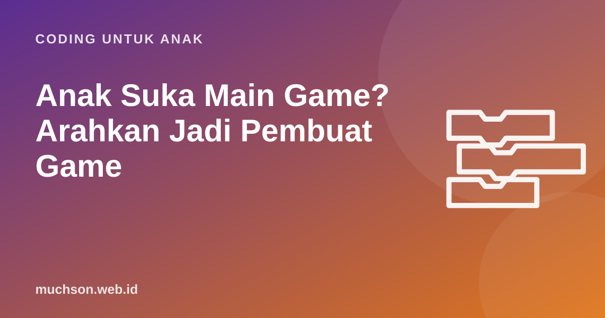

Beranda › Artikel › Coding untuk Anak
Coding untuk AnakAnak Suka Main Game? Arahkan Jadi Pembuat Game
Melarang game sering berakhir dengan pertengkaran. Membiarkan tanpa batas juga bukan pilihan. Ada jalan tengah yang sering berhasil: memakai rasa suka anak pada game sebagai pintu untuk belajar membuat game. Anak yang tadinya hanya bermain mulai bertanya "bagaimana cara membuatnya?", dan pertanyaan itu adalah awal yang sangat baik.

Dari pemain menjadi pembuat
Mitchel Resnick dari MIT sering membedakan anak yang sekadar membaca media digital dengan anak yang juga bisa menulisnya. Bermain game adalah membaca; membuat game adalah menulis. Keduanya boleh, tetapi yang kedua melatih jauh lebih banyak kemampuan: merancang aturan, berhitung, bercerita, menguji, dan memperbaiki.
Langkah 1: bedah game favoritnya
Ajak anak menjadi "detektif game". Pilih game sederhana yang ia sukai, lalu bahas bersama dengan pertanyaan ini. Anak biasanya sangat antusias karena topiknya miliknya.
Perhatikan baris "angka apa yang berubah di layar". Tanpa sadar anak sedang mengidentifikasi variabel. Baris "aturan menang dan kalah" adalah kondisi. Ia sedang belajar konsep pemrograman lewat game yang ia cintai.
Langkah 2: buat versi mini
Game komersial dibuat tim besar selama bertahun-tahun. Bantu anak menurunkan ekspektasi dengan cara menyenangkan: buat versi mini yang menangkap satu inti keseruannya. Game lari menghindari rintangan bisa disederhanakan menjadi satu tokoh yang melompat saat spasi ditekan dan satu batu yang terus datang.
Jika anak berkata "aku mau bikin game seperti Minecraft", jangan bilang tidak mungkin. Katakan: "Wah keren. Game besar terdiri dari banyak bagian kecil. Bagian pertama mana yang mau kita buat?" Lalu mulai dari satu bagian, misalnya tokoh yang bisa berjalan dan melompat.
Langkah 3: siklus pembuat game
Bagian "minta orang lain mencoba" (playtesting) sangat berharga. Anak belajar bahwa yang menurutnya mudah ternyata sulit bagi adiknya, atau tombol yang menurutnya jelas ternyata membingungkan. Ini latihan empati: merancang untuk pengguna lain.
Aturan waktu layar yang adil
Membuat game tetap memakai layar. Bedanya, ini termasuk penggunaan layar yang aktif dan kreatif. American Academy of Pediatrics menyarankan keluarga membuat rencana penggunaan media bersama, yang memperhatikan bukan hanya durasi tetapi juga jenis kegiatan dan waktu tanpa layar. Contoh kesepakatan yang bisa dicoba:
| Jenis waktu layar | Contoh | Saran aturan |
|---|---|---|
| Membuat (kreatif) | Coding, membuat animasi, menggambar digital | Didahulukan, dijadwalkan rutin |
| Belajar | Latihan sekolah, video edukatif bersama | Sesuai kebutuhan |
| Bermain | Main game | Ada batas waktu yang disepakati |
| Menonton | Video hiburan | Paling dibatasi, sebaiknya ditemani |
Jangan menjadikan coding sebagai "tiket" untuk boleh main game ("coding 30 menit, baru boleh main"). Itu membuat coding terasa seperti hukuman. Biarkan coding berdiri sendiri sebagai kegiatan yang menyenangkan.
Platform pembuat game sesuai usia
| Usia | Platform | Catatan |
|---|---|---|
| 5-7 | ScratchJr | Cerita dan game sangat sederhana di tablet |
| 8-12 | Scratch | Game 2D lengkap dengan skor, level, dan clone |
| 12+ | Python dengan Pygame, atau mesin game lain | Butuh dasar logika yang kuat; periksa batas usia dan fitur sosial tiap platform |
Bila anak sudah menunjukkan minat, beri jalur yang membawanya dari game mini ke game lengkap secara bertahap. Dua pelajaran pertama PixelKode bisa dicoba gratis; di modul Game, anak merancang, membuat, menguji, dan mempresentasikan game buatannya sendiri.
Tanya jawab
Apakah anak yang kecanduan game cocok belajar coding?
Umur berapa anak bisa membuat game?
Apakah membuat game termasuk screen time?
Bagaimana jika anak hanya mau main, tidak mau membuat?
Sumber dan bacaan lanjut
- AAP Family Media Plan (HealthyChildren.org)
- Resnick, M. Lifelong Kindergarten Group, MIT Media Lab
- WHO: gaming disorder, tanya jawab
- Scratch untuk orang tua